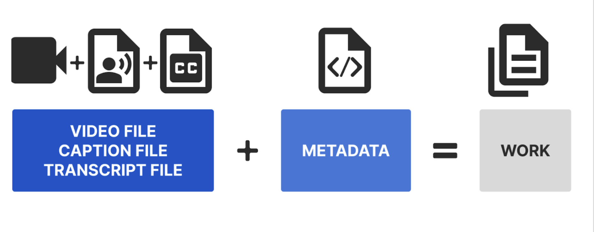

Deep Blue Documents Glossary
In this glossary, we define how we use the following terms in Deep Blue Documents.
A Work and its components
Metadata
Descriptive information that defines key attributes about a Work. When researchers create metadata for their Work, others in their community of practice can more easily discover the Work and assess its relevance to their Work. As metadata are designed to be discoverable through online search engines, researchers preparing metadata should consider what details others will need in order to find and connect with the Work.
Work
The main organizational unit within the Deep Blue Documents repository. A Work refers to a group of related documents or materials that can be in a variety of formats, including but not limited to PDFs, videos, audio recordings, and images. A Work can contain multiple files. In the example below, this Work is a video recording that includes three files: (1) a video file, (2) a caption file, and (3) a transcript file.
Important terms
Bit-level preservation
All digital files are, at their most basic level, a sequence of bits (1’s and 0’s) encoded in physical material like a hard drive. When Deep Blue Documents ingests a new file, our system automatically preserves the file’s sequence of bits (or "bitstream"), no matter the file type. "Bit-level preservation" means that we keep this bitstream for reference so that we can a) regularly check that files have not been corrupted over time, and b) restore files that have undergone changes if necessary.
Checksum
A handy algorithm for detecting even the smallest differences between files. We can immediately see if a file has changed by comparing its current checksum to the checksum our system generated when the file was first uploaded; we can then restore the file to its original state if need be.
Collection
A Deep Blue Documents Collection corresponds to an academic or administrative unit at U-M that produces creative, intellectual, or artistic Works, has a defined leader, has long-term stability, and can assume responsibility for setting collection policies. Groups wishing to establish a Deep Blue Documents collection that do not fall into this definition will be considered on a case-by-case basis. The University Library will also assist individuals in locating or establishing collections to host their Work.
Collection Administrator
A faculty or staff member from a school, college, department, research institute, or a Library liaison who helps define and manage procedures for a collection. They ensure each collection meets the needs of the community and adapts to changing requirements, working with the U-M Library to establish procedures that best suit the collection's needs. Each collection can have one or more administrators to fulfill these roles.
Community
In Deep Blue, there are two main communities: the research community and the archival community. The research community encompasses Deep Blue Documents and Deep Blue Data. The archival community is represented by the Bentley Historical Library, focused on preserving and providing access to historically significant materials. These communities organize, manage, and facilitate the discovery of scholarly and archival content.
DOI
A unique, permanent digital identifier assigned to an object. DOI stands for Digital Object Identifier. DOIs are commonly used in academia to identify scholarly Works and can be connected to metadata and URLs that point to an object’s online location or representation. As part of its mission to encourage sharing and preserving the research, teaching, learning, and creativity, Deep Blue Documents works with DataCite, a DOI Registration Agency, to mint DOIs for Works deposited to Deep Blue Documents. For a more detailed discussion of DOIs, visit DataCite’s website.
Fixity
The state of being unchanged over time. Deep Blue Documents ensures fixity for the files it hosts; in other words, we ensure that all files are continually fixed in the exact same state they were in upon upload, without a bit out of place.
Open access
A publishing model that seeks to make scholarly output, which is often indirectly paid for by tax dollars, freely and readily available to the public. As an Open Access repository, Deep Blue Documents allows anyone with access to the internet to view Works and download files. Allowed uses of those files are governed by the license selected by the depositor and Deep Blue Documents’s Terms of Use.
Open or non-proprietary format
A file format with publicly available documentation or specifications. These files can be opened with a variety of software and hardware systems and are often associated with widely accepted professional standards. Quintessential examples are PDF/A (.pdf) and JPEG (.jpg) files. Deep Blue Documents can provide superior preservation services for open formats as compared with proprietary formats.
Proprietary format
A file format that is commercially developed, which often means that its specifications are not publicly available and/or that files in that format can only be used with specialized software or hardware. Though Deep Blue Documents accepts files in all formats, the repository’s ability to preserve proprietary formats is limited; therefore, files in open formats are preferred. For more details about Deep Blue Documents’s Preservation Policy, visit the Preservation page.
Proxy
A person to whom a depositor gives the authority to make a deposit on the depositor’s behalf. In cases where a proxy is appointed, the depositor of record still retains the authority to alter the deposit and answer questions about it; they remain responsible for its content.
Personally identifiable information
Information that can be used to discover the identity of human research subjects is considered to be personally identifiable information. In the vast majority of cases, we do not accept this kind of information, for both legal and ethical reasons. For more information, feel free to review U-M's standard practice guide for research with human participants.